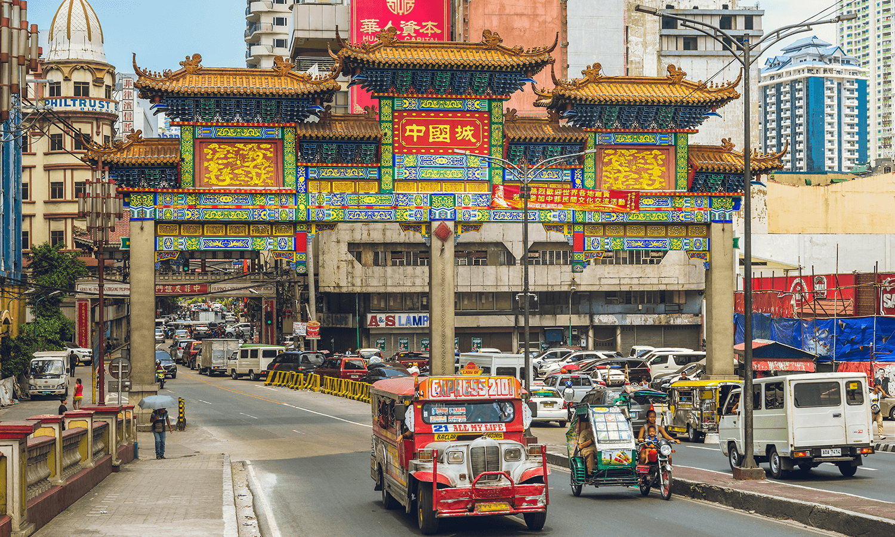

Binondo is the world's oldest Chinatown — founded in 1594 by the Spanish to house Chinese merchants near Intramuros. A labyrinth of food stalls, temples, gold shops, and 400 years of Chinese-Filipino culture, it is the most vibrant and delicious neighborhood in Manila.

Binondo is the world's oldest Chinatown, established in 1594 by the Spanish colonial government to house the Sangleys — Chinese merchants and traders who had been coming to Manila for centuries before the Spanish arrived. It sits just across the Pasig River from Intramuros, connected by the historic Jones Bridge.
Today, Binondo is the most vibrant food destination in Manila — a dense network of streets packed with Chinese-Filipino restaurants, dim sum houses, noodle shops, bakeries, and street food stalls. The food here is extraordinary: pancit, siopao, hopia, tikoy, goto, and dozens of dishes that represent 400 years of culinary fusion between Chinese and Filipino traditions.
Beyond food, Binondo has the Minor Basilica of San Lorenzo Ruiz (patron church of the Filipino diaspora), the Binondo Church, gold shops, herbal medicine stores, and the atmospheric streets of the oldest Chinese community in the world outside China.
Binondo is just across the Pasig River from Intramuros — easily reached by LRT, jeepney, or on foot via Jones Bridge.
Take LRT Line 1 to Carriedo Station. Walk north through Quiapo and across the Quezon Bridge to reach Binondo in about 15 minutes.
LRT Line 1: Carriedo Station | ~15 min walkWalk north from Intramuros across the Jones Bridge over the Pasig River — Binondo is directly on the other side. The walk takes about 10 minutes from Fort Santiago.
Walk from Intramuros: ~10 min | Via Jones BridgeJoin a Binondo food tour — guided walking tours that take you through the best food stalls, restaurants, and hidden gems of the Chinatown. Several operators offer 3₱4 hour tours with tastings included.
Food tour: ~₱800–₱1,500 | Guide + tastings includedBinondo is best explored on foot — wander the streets around Ongpin Street (the main commercial strip), Carvajal Street (street food), and the area around Binondo Church. Get lost — the best discoveries are accidental.
Main streets: Ongpin, Carvajal, Nueva | Eat everythingClick any pin to explore Binondo and the surrounding historic Manila district.
Combine a Binondo food walk with Intramuros and the National Museum for the perfect historic Manila day.
Start with a Binondo breakfast — goto (rice porridge) at a local turo-turo, followed by fresh dim sum and hopia from Eng Bee Tin. The morning food scene is the best in Manila.
Walk Ongpin Street — browse the gold shops, herbal medicine stores, and bakeries. Visit the Minor Basilica of San Lorenzo Ruiz for a moment of quiet amid the bustle.
Walk across Jones Bridge to Intramuros. Visit Fort Santiago, San Agustin Church, and Manila Cathedral for the complete historic Manila morning.
Return to Binondo for lunch — try pancit at one of the classic Chinese-Filipino restaurants on Carvajal Street or Ongpin Street.
Head to the National Museum of the Philippines for the afternoon — free admission, the Spoliarium, and the Tree of Life installation.
"Binondo is the most delicious neighborhood I've visited in Southeast Asia. The food is extraordinary — 400 years of Chinese and Filipino culinary traditions fused into something completely unique. The goto for breakfast, the hopia from Eng Bee Tin, the pancit at lunch — every bite tells a story. And the streets themselves are fascinating — gold shops, temples, herbal medicine stores, and the oldest Chinatown in the world."
"I did the Binondo food tour and it was the highlight of my Manila trip. Our guide took us to places I never would have found on my own — a 100-year-old bakery, a family-run dim sum kitchen, a street stall that has been selling the same noodle dish for three generations. Binondo is living history — and it's delicious."